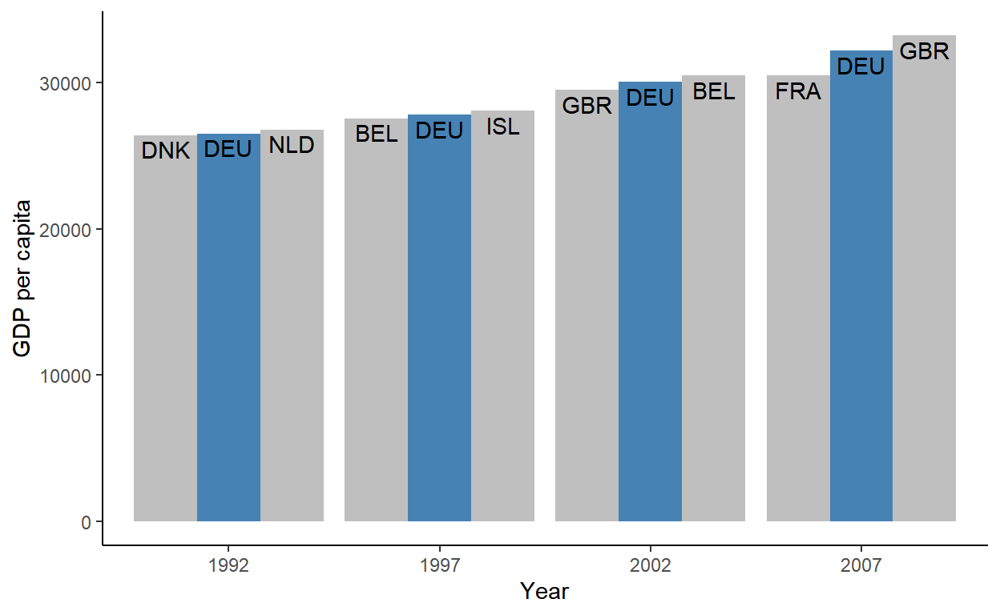

Row relational operations with slice()
June Choe ![]()
Intro
In data wrangling, there are a handful of classes of operations on data frames that we think of as theoretically well-defined and tackling distinct problems. To name a few, these include subsetting, joins, split-apply-combine, pairwise operations, nested-column workflows, and so on.
Against this rich backdrop, there’s one aspect of data wrangling that doesn’t receive as much attention: ordering of rows. This isn’t necessarily surprising - we often think of row order as an auxiliary attribute of data frames since they don’t speak to the content of the data, per se. I think we all share the intuition that two dataframe that differ only in row order are practically the same for most analysis purposes.
Except when they aren’t.
In this blog post I want to talk about a few, somewhat esoteric cases of what I like to call row-relational operations. My goal is to try to motivate row-relational operations as a full-blown class of data wrangling operation that includes not only row ordering, but also sampling, shuffling, repeating, interweaving, and so on (I’ll go over all of these later).
Without spoiling too much, I believe that dplyr::slice() offers a powerful context for operations over row indices, even those that at first seem to lack a “tidy” solution. You may already know slice() as an indexing function, but my hope is to convince you that it can do so much more.
Let’s start by first talking about some special properties of dplyr::slice(), and then see how we can use it for various row-relational operations.
Special properties of dplyr::slice()
Basic usage
For the following demonstration, I’ll use a small subset of the dplyr::starwars dataset:
starwars_sm <- dplyr::starwars[1:10, 1:3]
starwars_sm # A tibble: 10 × 3
name height mass
<chr> <int> <dbl>
1 Luke Skywalker 172 77
2 C-3PO 167 75
3 R2-D2 96 32
4 Darth Vader 202 136
5 Leia Organa 150 49
6 Owen Lars 178 120
7 Beru Whitesun Lars 165 75
8 R5-D4 97 32
9 Biggs Darklighter 183 84
10 Obi-Wan Kenobi 182 771) Row selection
slice() is a row indexing verb - if you pass it a vector of integers, it subsets data frame rows:
starwars_sm |>
slice(1:6) # First six rows # A tibble: 6 × 3
name height mass
<chr> <int> <dbl>
1 Luke Skywalker 172 77
2 C-3PO 167 75
3 R2-D2 96 32
4 Darth Vader 202 136
5 Leia Organa 150 49
6 Owen Lars 178 120Like other dplyr verbs with mutate-semantics, you can use context-dependent expressions inside slice(). For example, you can use n() to grab the last row (or last couple of rows):
# A tibble: 1 × 3
name height mass
<chr> <int> <dbl>
1 Obi-Wan Kenobi 182 77 # A tibble: 3 × 3
name height mass
<chr> <int> <dbl>
1 R5-D4 97 32
2 Biggs Darklighter 183 84
3 Obi-Wan Kenobi 182 77Another context-dependent expression that comes in handy is row_number(), which returns all row indices. Using it inside slice() essentially performs an identity transformation:
identical(
starwars_sm,
starwars_sm |> slice( row_number() )
) [1] TRUELastly, similar to in select(), you can use - for negative indexing (to remove rows):
2) Dynamic dots
slice() supports dynamic dots. If you pass row indices into multiple argument positions, slice() will concatenate them for you:
If you have a list() of row indices, you can use the splice operator !!! to spread them out:
# A tibble: 6 × 3
name height mass
<chr> <int> <dbl>
1 Luke Skywalker 172 77
2 C-3PO 167 75
3 R2-D2 96 32
4 Darth Vader 202 136
5 Leia Organa 150 49
6 Owen Lars 178 120The above call to slice() evaluates to the following after splicing:
3) Row ordering
slice() respects the order in which you supplied the row indices:
starwars_sm |>
slice(3, 1, 2, 5) # A tibble: 4 × 3
name height mass
<chr> <int> <dbl>
1 R2-D2 96 32
2 Luke Skywalker 172 77
3 C-3PO 167 75
4 Leia Organa 150 49This means you can do stuff like random sampling with sample():
# A tibble: 10 × 3
name height mass
<chr> <int> <dbl>
1 Obi-Wan Kenobi 182 77
2 Owen Lars 178 120
3 Leia Organa 150 49
4 Darth Vader 202 136
5 Luke Skywalker 172 77
6 R5-D4 97 32
7 C-3PO 167 75
8 Beru Whitesun Lars 165 75
9 Biggs Darklighter 183 84
10 R2-D2 96 32You can also shuffle a subset of rows (ex: just the first five):
# A tibble: 10 × 3
name height mass
<chr> <int> <dbl>
1 C-3PO 167 75
2 Leia Organa 150 49
3 R2-D2 96 32
4 Darth Vader 202 136
5 Luke Skywalker 172 77
6 Owen Lars 178 120
7 Beru Whitesun Lars 165 75
8 R5-D4 97 32
9 Biggs Darklighter 183 84
10 Obi-Wan Kenobi 182 77Or reorder all rows by their indices (ex: in reverse):
starwars_sm |>
slice( rev(row_number()) ) # A tibble: 10 × 3
name height mass
<chr> <int> <dbl>
1 Obi-Wan Kenobi 182 77
2 Biggs Darklighter 183 84
3 R5-D4 97 32
4 Beru Whitesun Lars 165 75
5 Owen Lars 178 120
6 Leia Organa 150 49
7 Darth Vader 202 136
8 R2-D2 96 32
9 C-3PO 167 75
10 Luke Skywalker 172 774) Out-of-bounds handling
If you pass a row index that’s out of bounds, slice() returns a 0-row data frame:
# A tibble: 0 × 3
# ℹ 3 variables: name <chr>, height <int>, mass <dbl>When mixed with valid row indices, out-of-bounds indices are simply ignored (much 💜 for this behavior):
# A tibble: 3 × 3
name height mass
<chr> <int> <dbl>
1 Luke Skywalker 172 77
2 C-3PO 167 75
3 R2-D2 96 32This lets you do funky stuff like select all even numbered rows by passing slice() all row indices times 2:
starwars_sm |>
slice( row_number() * 2 ) # Add `- 1` at the end for *odd* rows! # A tibble: 5 × 3
name height mass
<chr> <int> <dbl>
1 C-3PO 167 75
2 Darth Vader 202 136
3 Owen Lars 178 120
4 R5-D4 97 32
5 Obi-Wan Kenobi 182 77Re-imagining slice() with data-masking
slice() is already pretty neat as it is, but that’s just the tip of the iceberg.
The really cool, under-rated feature of slice() is that it’s data-masked, meaning that you can reference column vectors as if they’re variables. Another way of describing this property of slice() is to say that it has mutate-semantics.
At a very basic level, this means that slice() can straightforwardly replicate the behavior of some dplyr verbs like arrange() and filter()!
slice() as arrange()
From our starwars_sm data, if we want to sort by height we can use arrange():
starwars_sm |>
arrange(height) # A tibble: 10 × 3
name height mass
<chr> <int> <dbl>
1 R2-D2 96 32
2 R5-D4 97 32
3 Leia Organa 150 49
4 Beru Whitesun Lars 165 75
5 C-3PO 167 75
6 Luke Skywalker 172 77
7 Owen Lars 178 120
8 Obi-Wan Kenobi 182 77
9 Biggs Darklighter 183 84
10 Darth Vader 202 136But we can also do this with slice() to the same effect, using order():
# A tibble: 10 × 3
name height mass
<chr> <int> <dbl>
1 R2-D2 96 32
2 R5-D4 97 32
3 Leia Organa 150 49
4 Beru Whitesun Lars 165 75
5 C-3PO 167 75
6 Luke Skywalker 172 77
7 Owen Lars 178 120
8 Obi-Wan Kenobi 182 77
9 Biggs Darklighter 183 84
10 Darth Vader 202 136This is conceptually equivalent to combining the following 2-step process:
ordered_val_ind <- order(starwars_sm$height) ordered_val_ind[1] 3 8 5 7 2 1 6 10 9 4starwars_sm |> slice( ordered_val_ind )# A tibble: 10 × 3 name height mass <chr> <int> <dbl> 1 R2-D2 96 32 2 R5-D4 97 32 3 Leia Organa 150 49 4 Beru Whitesun Lars 165 75 5 C-3PO 167 75 6 Luke Skywalker 172 77 7 Owen Lars 178 120 8 Obi-Wan Kenobi 182 77 9 Biggs Darklighter 183 84 10 Darth Vader 202 136
slice() as filter()
We can also use slice() to filter(), using which():
[1] TRUEThus, we can think of filter() and slice() as two sides of the same coin:
filter()takes a logical vector that’s the same length as the number of rows in the data frameslice()takes an integer vector that’s a (sub)set of a data frame’s row indices.
To put it more concretely, this logical vector was being passed to the above filter() call:
starwars_sm$height > 150 [1] TRUE TRUE FALSE TRUE FALSE TRUE TRUE FALSE TRUE TRUEWhile this integer vector was being passed to the above slice() call, where which() returns the position of TRUE values, given a logical vector:
which( starwars_sm$height > 150 ) [1] 1 2 4 6 7 9 10Special properties of slice()
This re-imagined slice() that heavily exploits data-masking gives us two interesting properties:
We can work with sets of row indices that need not to be the same length as the data frame (vs.
filter()).We can work with row indices as integers, which are legible to arithmetic operations (ex:
+and*)
To grok the significance of working with rows as integer sets, let’s work through some examples where slice() comes in very handy.
A gallery of row operations with slice()
Repeat rows (in place)
In {tidyr}, there’s a function called uncount() which does the opposite of dplyr::count():
# A tibble: 2 × 2
x n
<chr> <dbl>
1 a 1
2 b 2uncount_df |>
uncount(n) # A tibble: 3 × 1
x
<chr>
1 a
2 b
3 bWe can mimic this behavior with slice(), using rep(times = ...):
[1] 1 2 2uncount_df |>
slice( rep(row_number(), times = n) ) |>
select( -n ) # A tibble: 3 × 1
x
<chr>
1 a
2 b
3 bWhat if instead of a whole column storing that information, we only have information about row position?
Let’s say we want to duplicate the rows of starwars_sm at the repeat_at positions:
repeat_at <- sample(5, 2)
repeat_at [1] 4 5In slice(), you’d just select all rows plus those additional rows, then sort the integer row indices:
starwars_sm |>
slice( sort(c(row_number(), repeat_at)) ) # A tibble: 12 × 3
name height mass
<chr> <int> <dbl>
1 Luke Skywalker 172 77
2 C-3PO 167 75
3 R2-D2 96 32
4 Darth Vader 202 136
5 Darth Vader 202 136
6 Leia Organa 150 49
7 Leia Organa 150 49
8 Owen Lars 178 120
9 Beru Whitesun Lars 165 75
10 R5-D4 97 32
11 Biggs Darklighter 183 84
12 Obi-Wan Kenobi 182 77What if we also separately have information about how much to repeat those rows by?
repeat_by <- c(3, 4)You can apply the same rep() method for just the subset of rows to repeat:
starwars_sm |>
slice( sort(c(row_number(), rep(repeat_at, times = repeat_by - 1))) ) # A tibble: 15 × 3
name height mass
<chr> <int> <dbl>
1 Luke Skywalker 172 77
2 C-3PO 167 75
3 R2-D2 96 32
4 Darth Vader 202 136
5 Darth Vader 202 136
6 Darth Vader 202 136
7 Leia Organa 150 49
8 Leia Organa 150 49
9 Leia Organa 150 49
10 Leia Organa 150 49
11 Owen Lars 178 120
12 Beru Whitesun Lars 165 75
13 R5-D4 97 32
14 Biggs Darklighter 183 84
15 Obi-Wan Kenobi 182 77Circling back to uncount(), you could also initialize a vector of 1s and replace() where the rows should be repeated:
# A tibble: 15 × 3
name height mass
<chr> <int> <dbl>
1 Luke Skywalker 172 77
2 C-3PO 167 75
3 R2-D2 96 32
4 Darth Vader 202 136
5 Darth Vader 202 136
6 Darth Vader 202 136
7 Leia Organa 150 49
8 Leia Organa 150 49
9 Leia Organa 150 49
10 Leia Organa 150 49
11 Owen Lars 178 120
12 Beru Whitesun Lars 165 75
13 R5-D4 97 32
14 Biggs Darklighter 183 84
15 Obi-Wan Kenobi 182 77Subset a selection of rows + the following row
Row order can sometimes encode a meaningful continuous measure, like time.
Take for example this subset of the flights dataset in {nycflights13}:
# A tibble: 100 × 3
dep_time flight carrier
<int> <int> <chr>
1 535 1141 AA
2 551 5716 EV
3 555 145 B6
4 556 208 B6
5 556 79 B6
6 601 501 B6
7 604 725 B6
8 606 135 B6
9 606 600 UA
10 607 829 US
# ℹ 90 more rowsHere, the rows are ordered by dep_time, such that given a row, the next row is a data point for the next flight that departed from the airport.
And let’s say we’re interested in flights that took off immediately after American Airlines ("AA") flights. Given what we just noted about the ordering of rows in the data frame, we can do this in slice() by adding 1 to the row index of AA flights:
# A tibble: 14 × 3
dep_time flight carrier
<int> <int> <chr>
1 551 5716 EV
2 627 905 B6
3 652 117 B6
4 714 825 AA
5 717 987 B6
6 724 11 VX
7 742 183 DL
8 802 655 AA
9 805 2143 DL
10 847 59 B6
11 858 647 AA
12 859 120 DL
13 1031 179 AA
14 1036 641 B6What if we also want to keep observations for the preceding AA flights as well? We can just stick which(carrier == "AA") inside slice() too:
# A tibble: 28 × 3
dep_time flight carrier
<int> <int> <chr>
1 535 1141 AA
2 626 413 AA
3 652 1815 AA
4 711 443 AA
5 714 825 AA
6 724 33 AA
7 739 59 AA
8 802 1838 AA
9 802 655 AA
10 843 1357 AA
# ℹ 18 more rowsBut now the rows are now ordered such that all the AA flights come before the other flights! How can we preserve the original order of increasing dep_time?
We could reconstruct the initial row order by piping the result into arrange(dep_time) again, but the simplest solution would be to concatenate the set of row indices and sort() them, since the output of which() is already integer!
# A tibble: 28 × 3
dep_time flight carrier
<int> <int> <chr>
1 535 1141 AA
2 551 5716 EV
3 626 413 AA
4 627 905 B6
5 652 1815 AA
6 652 117 B6
7 711 443 AA
8 714 825 AA
9 714 825 AA
10 717 987 B6
# ℹ 18 more rowsNotice how the 8th and 9th rows are repeated here - that’s because 2 AA flights departed in a row (ha!). We can use unique() to remove duplicate rows in the same call to slice():
# A tibble: 24 × 3
dep_time flight carrier
<int> <int> <chr>
1 535 1141 AA
2 551 5716 EV
3 626 413 AA
4 627 905 B6
5 652 1815 AA
6 652 117 B6
7 711 443 AA
8 714 825 AA
9 717 987 B6
10 724 33 AA
# ℹ 14 more rowsImportantly, we can do all of this inside slice() because we’re working with integer sets. The integer part allows us to do things like + 1 and sort(), while the set part allows us to combine with c() and remove duplicates with unique().
Subset a selection of rows + multiple following rows
In this example, let’s problematize our approach with the repeated which() calls in our previous solution.
Imagine another scenario where we want to filter for all AA flights and three subsequent flights for each.
Do we need to write the solution out like this? That’s a lot of repetition!
You might think we can get away with + 0:3, but it doesn’t work as we’d like. The + just forces 0:3 to be (partially) recycled to the same length as carrier for element-wise addition:
which(flights_df$carrier == "AA") + 0:3 Warning in which(flights_df$carrier == "AA") + 0:3: longer object length is not
a multiple of shorter object length [1] 1 14 20 27 25 28 34 40 38 62 66 68 91 93If only we can get the outer sum of the two arrays, 0:3 and which(carrier == "AA") … Oh wait, we can - that’s what outer() does!
[,1] [,2] [,3] [,4] [,5] [,6] [,7] [,8] [,9] [,10] [,11] [,12] [,13] [,14]
[1,] 1 13 18 24 25 27 32 37 38 61 64 65 91 92
[2,] 2 14 19 25 26 28 33 38 39 62 65 66 92 93
[3,] 3 15 20 26 27 29 34 39 40 63 66 67 93 94
[4,] 4 16 21 27 28 30 35 40 41 64 67 68 94 95This is essentially the repeated which() vectors stacked on top of each other, but as a matrix:
[1] 1 13 18 24 25 27 32 37 38 61 64 65 91 92
[1] 2 14 19 25 26 28 33 38 39 62 65 66 92 93
[1] 3 15 20 26 27 29 34 39 40 63 66 67 93 94
[1] 4 16 21 27 28 30 35 40 41 64 67 68 94 95The fact that outer() returns all the relevant row indices inside a single matrix is nice because we can collect the indices column-by-column, preserving row order. Matrices, like data frames, are column-major, so coercing a matrix to a vector collapses it column-wise:
as.integer( outer(0:3, which(flights_df$carrier == "AA"), `+`) ) [1] 1 2 3 4 13 14 15 16 18 19 20 21 24 25 26 27 25 26 27 28 27 28 29 30 32
[26] 33 34 35 37 38 39 40 38 39 40 41 61 62 63 64 64 65 66 67 65 66 67 68 91 92
[51] 93 94 92 93 94 95Other ways to coerce matrix to vector
There are two other options for coercing a matrix to vector - c() and as.vector(). I like to stick with as.integer() because that enforces integer type (which makes sense for row indices), and c() can be nice because it’s less to type (although it’s off-label usage):
Somewhat relatedly - and this only works inside the tidy-eval context of slice() - you can get a similar effect of “collapsing” a matrix using the splice operator !!!:
seq_matrix <- matrix(1:9, byrow = TRUE, nrow = 3)
as.integer(seq_matrix) [1] 1 4 7 2 5 8 3 6 9 [1] TRUEHere, the !!!seq_matrix was slotting each individual “cell” as argument to slice():
A big difference in behavior between as.integer() vs. !!! is that the latter works for lists of indices too, by slotting each element of the list as an argument to slice():
slice(c(1, 4, 7, 2), c(5, 8, 3, 6, 9))However, as you may already know, as.integer() cannot flatten lists:
as.integer(seq_list) Error in eval(expr, envir, enclos): 'list' object cannot be coerced to type 'integer'Note that as.vector() and c() leaves lists as is, which is another reason to prefer as.integer() for type-checking:
Finally, back in our !!!seq_matrix example, we could have applied asplit(MARGIN = 2) to chunk the splicing by matrix column, although the overall effect would be the same:
This lets us ask questions like: Which AA flights departed within 3 flights of another AA flight?
flights_df |>
slice( as.integer( outer(0:3, which(carrier == "AA"), `+`) ) ) |>
filter( carrier == "AA", duplicated(flight) ) |>
distinct(flight, carrier) # A tibble: 6 × 2
flight carrier
<int> <chr>
1 825 AA
2 33 AA
3 655 AA
4 1 AA
5 647 AA
6 179 AASlicing all the way down: Case 1
With the addition of the .by argument to slice() in dplyr v1.10, we can re-write the above code as three calls to slice() (+ a call to select()):
flights_df |>
slice( as.integer( outer(0:3, which(carrier == "AA"), `+`) ) ) |>
slice( which(carrier == "AA" & duplicated(flight)) ) |> # filter()
slice( 1, .by = c(flight, carrier) ) |> # distinct()
select(flight, carrier) # A tibble: 6 × 2
flight carrier
<int> <chr>
1 825 AA
2 33 AA
3 655 AA
4 1 AA
5 647 AA
6 179 AAThe next example will demonstrate another, perhaps more practical usecase for outer() in slice().
Filter (and encode) neighboring rows
Let’s use a subset of the {gapminder} data set for this one. Here, we have data for each European country’s GDP-per-capita by year, between 1992 to 2007:
gapminder_df <- gapminder::gapminder |>
left_join(gapminder::country_codes, by = "country") |> # `multiple = "all"`
filter(year >= 1992, continent == "Europe") |>
select(country, country_code = iso_alpha, year, gdpPercap)
gapminder_df # A tibble: 120 × 4
country country_code year gdpPercap
<chr> <chr> <int> <dbl>
1 Albania ALB 1992 2497.
2 Albania ALB 1997 3193.
3 Albania ALB 2002 4604.
4 Albania ALB 2007 5937.
5 Austria AUT 1992 27042.
6 Austria AUT 1997 29096.
7 Austria AUT 2002 32418.
8 Austria AUT 2007 36126.
9 Belgium BEL 1992 25576.
10 Belgium BEL 1997 27561.
# ℹ 110 more rowsThis time, let’s see the desired output (plot) first and build our way up. The goal is to plot the GDP growth of Germany over the years, and its yearly GDP neighbors side-by-side:

First, let’s think about what a “GDP neighbor” means in row-relational terms. If you arranged the data by GDP, the GDP neighbors would be the rows that come immediately before and after the rows for Germany. You need to recalculate neighbors every year though, so this arrange() + slice() combo should happen by-year.
With that in mind, let’s set up a year grouping and arrange by gdpPercap within year:1
# A tibble: 120 × 4
# Groups: year [4]
country country_code year gdpPercap
<chr> <chr> <int> <dbl>
1 Albania ALB 1992 2497.
2 Bosnia and Herzegovina BIH 1992 2547.
3 Turkey TUR 1992 5678.
4 Bulgaria BGR 1992 6303.
5 Romania ROU 1992 6598.
6 Montenegro MNE 1992 7003.
7 Poland POL 1992 7739.
8 Croatia HRV 1992 8448.
9 Serbia SRB 1992 9325.
10 Slovak Republic SVK 1992 9498.
# ℹ 110 more rowsNow within each year, we want to grab the row for Germany and its neighboring rows. We can do this by taking the outer() sum of -1:1 and the row indices for Germany:
# A tibble: 12 × 4
# Groups: year [4]
country country_code year gdpPercap
<chr> <chr> <int> <dbl>
1 Denmark DNK 1992 26407.
2 Germany DEU 1992 26505.
3 Netherlands NLD 1992 26791.
4 Belgium BEL 1997 27561.
5 Germany DEU 1997 27789.
6 Iceland ISL 1997 28061.
7 United Kingdom GBR 2002 29479.
8 Germany DEU 2002 30036.
9 Belgium BEL 2002 30486.
10 France FRA 2007 30470.
11 Germany DEU 2007 32170.
12 United Kingdom GBR 2007 33203.Slicing all the way down: Case 2
The new .by argument in slice() comes in handy again here, allowing us to collapse the group_by() + arrange() combo into one slice() call:
# A tibble: 12 × 4
country country_code year gdpPercap
<chr> <chr> <int> <dbl>
1 Denmark DNK 1992 26407.
2 Germany DEU 1992 26505.
3 Netherlands NLD 1992 26791.
4 Belgium BEL 1997 27561.
5 Germany DEU 1997 27789.
6 Iceland ISL 1997 28061.
7 United Kingdom GBR 2002 29479.
8 Germany DEU 2002 30036.
9 Belgium BEL 2002 30486.
10 France FRA 2007 30470.
11 Germany DEU 2007 32170.
12 United Kingdom GBR 2007 33203.mutate() call, but there may be other cases where you’d want to use slice(.by = ) for temporary grouping.
Now we’re already starting to see the shape of the data that we want! The last step is to encode the relationship of each row to Germany - does a row represent Germany itself, or a country that’s one GDP ranking below or above Germany?
Continuing with our grouped context, we make a new column grp that assigns a factor value "lo"-"is"-"hi" (for “lower” than Germany, “is” Germany and “higher” than Germany) to each country trio by year. Notice the use of fct_inorder() below - this ensures that the factor levels are in the order of their occurrence (necessary for the correct ordering of bars in geom_col() later):
gapminder_df |>
group_by(year) |>
arrange(gdpPercap) |>
slice( as.integer(outer( -1:1, which(country == "Germany"), `+` )) ) |>
mutate(grp = forcats::fct_inorder(c("lo", "is", "hi"))) # A tibble: 12 × 5
# Groups: year [4]
country country_code year gdpPercap grp
<chr> <chr> <int> <dbl> <fct>
1 Denmark DNK 1992 26407. lo
2 Germany DEU 1992 26505. is
3 Netherlands NLD 1992 26791. hi
4 Belgium BEL 1997 27561. lo
5 Germany DEU 1997 27789. is
6 Iceland ISL 1997 28061. hi
7 United Kingdom GBR 2002 29479. lo
8 Germany DEU 2002 30036. is
9 Belgium BEL 2002 30486. hi
10 France FRA 2007 30470. lo
11 Germany DEU 2007 32170. is
12 United Kingdom GBR 2007 33203. hiWe now have everything that’s necessary to make our desired plot, so we ungroup(), write some {ggplot2} code, and voila!
gapminder_df |>
group_by(year) |>
arrange(gdpPercap) |>
slice( as.integer(outer( -1:1, which(country == "Germany"), `+` )) ) |>
mutate(grp = forcats::fct_inorder(c("lo", "is", "hi"))) |>
# Ungroup and make ggplot
ungroup() |>
ggplot(aes(as.factor(year), gdpPercap, group = grp)) +
geom_col(aes(fill = grp == "is"), position = position_dodge()) +
geom_text(
aes(label = country_code),
vjust = 1.3,
position = position_dodge(width = .9)
) +
scale_fill_manual(
values = c("grey75", "steelblue"),
guide = guide_none()
) +
theme_classic() +
labs(x = "Year", y = "GDP per capita")Solving the harder version of the problem
The solution presented above relies on a fragile assumption that Germany will always have a higher and lower ranking GDP neighbor every year. But nothing about the problem description guarantees this, so how can we re-write our code to be more robust?
First, let’s simulate a data where Germany is the lowest ranking country in 2002 and the highest ranking in 2007. In other words, Germany only has one GDP neighbor in those years:
# A tibble: 10 × 4
country country_code year gdpPercap
<chr> <chr> <int> <dbl>
1 Denmark DNK 1992 26407.
2 Germany DEU 1992 26505.
3 Netherlands NLD 1992 26791.
4 Belgium BEL 1997 27561.
5 Germany DEU 1997 27789.
6 Iceland ISL 1997 28061.
7 Germany DEU 2002 30036.
8 Belgium BEL 2002 30486.
9 France FRA 2007 30470.
10 Germany DEU 2007 32170.Given this data, we cannot assign the full, length-3 lo-is-hi factor by group, because the groups for year 2002 and 2007 only have 2 observations:
gapminder_harder_df |>
group_by(year) |>
mutate(grp = forcats::fct_inorder(c("lo", "is", "hi"))) Error in `mutate()`:
ℹ In argument: `grp = forcats::fct_inorder(c("lo", "is", "hi"))`.
ℹ In group 3: `year = 2002`.
Caused by error:
! `grp` must be size 2 or 1, not 3.The trick here is to turn each group of rows into an integer sequence where Germany is “anchored” to 2, and then use that vector to subset the lo-is-hi factor:
gapminder_harder_df |>
group_by(year) |>
mutate(
Germany_anchored_to_2 = row_number() - which(country == "Germany") + 2,
grp = forcats::fct_inorder(c("lo", "is", "hi"))[Germany_anchored_to_2]
) # A tibble: 10 × 6
# Groups: year [4]
country country_code year gdpPercap Germany_anchored_to_2 grp
<chr> <chr> <int> <dbl> <dbl> <fct>
1 Denmark DNK 1992 26407. 1 lo
2 Germany DEU 1992 26505. 2 is
3 Netherlands NLD 1992 26791. 3 hi
4 Belgium BEL 1997 27561. 1 lo
5 Germany DEU 1997 27789. 2 is
6 Iceland ISL 1997 28061. 3 hi
7 Germany DEU 2002 30036. 2 is
8 Belgium BEL 2002 30486. 3 hi
9 France FRA 2007 30470. 1 lo
10 Germany DEU 2007 32170. 2 isWe find that the lessons of working with row indices from slice() translated to solving this complex mutate() problem - neat!
Aside: kronecker() as as.vector(outer())
Following from the slice() + outer() strategy demoed above, imagine if we wanted to filter for "Luke Skywalker" and 4 other characters that are neighbors in the height and mass values.
dplyr::starwars[, 1:3] # A tibble: 87 × 3
name height mass
<chr> <int> <dbl>
1 Luke Skywalker 172 77
2 C-3PO 167 75
3 R2-D2 96 32
4 Darth Vader 202 136
5 Leia Organa 150 49
6 Owen Lars 178 120
7 Beru Whitesun Lars 165 75
8 R5-D4 97 32
9 Biggs Darklighter 183 84
10 Obi-Wan Kenobi 182 77
# ℹ 77 more rowsIn row-relational terms, “filtering neighboring values” just means “filtering rows after arranging by the values we care about”. We can express this using slice() and outer() as:
# A tibble: 6 × 3
name mass height
<chr> <dbl> <int>
1 Wedge Antilles 77 170
2 Luke Skywalker 77 172
3 Obi-Wan Kenobi 77 182
4 Biggs Darklighter 84 183
5 Anakin Skywalker 84 188
6 Mace Windu 84 188I raised this example on an unrelated thread on the R4DS/DSLC slack, where Anthony Durrant pointed me to kronecker() as a version of outer() that unlist before returning the output.
So in examples involving outer() to generate row indices in slice(), we can also use kronecker() instead to save a call to a flattening function like as.vector():
# A tibble: 6 × 3
name mass height
<chr> <dbl> <int>
1 Wedge Antilles 77 170
2 Biggs Darklighter 84 183
3 Luke Skywalker 77 172
4 Anakin Skywalker 84 188
5 Obi-Wan Kenobi 77 182
6 Mace Windu 84 188I returning to this problem with kronecker() also inspired me to write a function around this. Since slice()-ing with which(...) is just filter(...), I call it filter_around() and give it a filter() with its defaults.
filter_around <- function(.data, ..., by, n = 0, name = NULL) {
data <- .data |>
dplyr::arrange(dplyr::pick({{ by }}))
dots <- rlang::enquos(...)
lgls <- lapply(dots, rlang::eval_tidy, data = data)
inds <- which(as.logical(do.call(pmin, lgls)))
inds_around <- kronecker(inds, -n:n, `+`)
if (!is.null(name)) {
data[[name]] <- replace(rep(FALSE, nrow(data)), inds, TRUE)
}
data |>
dplyr::slice(.env$inds_around)
}Passing conditions to the dots makes it behave like filter():
# A tibble: 2 × 3
name height mass
<chr> <int> <dbl>
1 Luke Skywalker 172 77
2 Anakin Skywalker 188 84And other arguments can be used for the “around” behavior:
# A tibble: 6 × 4
name height mass target
<chr> <int> <dbl> <lgl>
1 Eeth Koth 171 NA FALSE
2 Luke Skywalker 172 77 TRUE
3 Greedo 173 74 FALSE
4 Plo Koon 188 80 FALSE
5 Anakin Skywalker 188 84 TRUE
6 Mace Windu 188 84 FALSEWindowed min/max/median (etc.)
Let’s say we have this small time series data, and we want to calculate a lagged 3-window moving minimum for the val column:
# A tibble: 6 × 2
time val
<int> <dbl>
1 1 50
2 2 40
3 3 60
4 4 30
5 5 20
6 6 10If you’re new to window functions, think of them as a special kind of group_by() + summarize() where groups are chunks of observations along a (typically unique) continuous measure like time, and observations can be shared between groups.
There are several packages implementing moving/sliding/rolling window functions. My current favorite is {r2c} (see a review of other implementations therein), but I also like {slider} for an implementation that follows familiar “tidy” design principles:
# A tibble: 6 × 3
time val moving_min
<int> <dbl> <dbl>
1 1 50 NA
2 2 40 NA
3 3 60 40
4 4 30 30
5 5 20 20
6 6 10 10Moving window is a general class of operations that encompass any arbitrary summary statistic - so not just min but other reducing functions like mean, standard deviation, etc. But what makes moving min (along with max, median, etc.) a particularly interesting case for our current discussion is that the value comes from an existing observation in the data. And if our time series is tidy, every observation makes up a row. See where I’m going with this?
Using outer() again, we can take the outer sum of all row indices of ts_df and -2:0. This gives us a matrix where each column represents a lagged size-3 moving window:
[,1] [,2] [,3] [,4] [,5] [,6]
[1,] -1 0 1 2 3 4
[2,] 0 1 2 3 4 5
[3,] 1 2 3 4 5 6The “lagged size-3” property of this moving window means that the first two windows are incomplete (consisting of less than 3 observations). We want to treat those as invalid, so we can drop the first two columns from our matrix:
windows_3lag[,-(1:2)] [,1] [,2] [,3] [,4]
[1,] 1 2 3 4
[2,] 2 3 4 5
[3,] 3 4 5 6For each remaining column, we want to grab the values of val at the corresponding row indices and find which row has the minimum val. In terms of code, we use apply() with MARGIN = 2L to column-wise apply a function where we use which.min() to find the location of the minimum val and convert it back to row index via subsetting:
Now let’s stick this inside slice(), exploiting the fact that it’s data-masked (ts_df$val can just be val) and exposes context-dependent expressions (1:nrow(ts_df) can just be row_number()):
moving_mins <- ts_df |>
slice(
outer(-2:0, row_number(), "+")[,-(1:2)] |>
apply(MARGIN = 2L, \(i) i[which.min(val[i])])
)
moving_mins # A tibble: 4 × 2
time val
<int> <dbl>
1 2 40
2 4 30
3 5 20
4 6 10From here, we can grab the val column and pad it with NA to add our desired window_min column to the original data frame:
# A tibble: 6 × 3
time val moving_min
<int> <dbl> <dbl>
1 1 50 NA
2 2 40 NA
3 3 60 40
4 4 30 30
5 5 20 20
6 6 10 10At this point you might think that this is a very round-about way of solving the same problem. But actually I think that it’s a faster route to solving a slightly more complicated problem - augmenting each observation of a data frame with information about comparison observations.
For example, our slice()-based solution sets us up nicely for also bringing along information about the time at which the moving_min occurred. After some rename()-ing and adding the original time information back in, we get back a relational data structure where time is a key shared with ts_df:
# A tibble: 4 × 3
time moving_min_time moving_min_val
<int> <int> <dbl>
1 3 2 40
2 4 4 30
3 5 5 20
4 6 6 10We can then left-join this to the original data to augment it with information about both the value of the 3-window minimum and the time that the minimum occurred:
left_join(ts_df, moving_mins2, by = "time") # A tibble: 6 × 4
time val moving_min_time moving_min_val
<int> <dbl> <int> <dbl>
1 1 50 NA NA
2 2 40 NA NA
3 3 60 2 40
4 4 30 4 30
5 5 20 5 20
6 6 10 6 10This is particularly useful if rows contain other useful information for comparison and you have memory to spare:
# A tibble: 6 × 4
time val col1 col2
<int> <dbl> <dbl> <dbl>
1 1 50 0.0183 0.00501
2 2 40 0.705 -0.0376
3 3 60 -0.647 0.724
4 4 30 0.868 -0.497
5 5 20 0.376 0.0114
6 6 10 0.310 0.00986The below code augments each observation in the original ts_wide_df data with information about the corresponding 3-window moving min (columns prefixed with "min3val_")
moving_mins_wide <- ts_wide_df |>
slice(
outer(-2:0, row_number(), "+")[,-(1:2)] |>
apply(MARGIN = 2L, \(i) i[which.min(val[i])])
) |>
rename_with(~ paste0("min3val_", .x)) |>
mutate(time = ts_wide_df$time[-(1:2)])
left_join(ts_wide_df, moving_mins_wide, by = "time") # A tibble: 6 × 8
time val col1 col2 min3val_time min3val_val min3val_col1
<int> <dbl> <dbl> <dbl> <int> <dbl> <dbl>
1 1 50 0.0183 0.00501 NA NA NA
2 2 40 0.705 -0.0376 NA NA NA
3 3 60 -0.647 0.724 2 40 0.705
4 4 30 0.868 -0.497 4 30 0.868
5 5 20 0.376 0.0114 5 20 0.376
6 6 10 0.310 0.00986 6 10 0.310
# ℹ 1 more variable: min3val_col2 <dbl>Evenly distributed row shuffling of balanced categories
Sometimes the ordering of rows in a data frame can be meaningful for an external application.
For example, many experiment-building platforms for psychology research require researchers to specify the running order of trials in an experiment via a csv, where each row represents a trial and each column represents information about the trial.
So an experiment testing the classic Stroop effect may have the following template:
# A tibble: 5 × 4
item_id trial word color
<int> <chr> <chr> <chr>
1 1 mismatch red brown
2 2 mismatch green red
3 3 mismatch purple green
4 4 mismatch brown blue
5 5 mismatch blue purpleWe probably also want to mix in some control trials where the word and color do match:
match_trials <- mismatch_trials |>
mutate(trial = "match", color = word)
match_trials # A tibble: 5 × 4
item_id trial word color
<int> <chr> <chr> <chr>
1 1 match red red
2 2 match green green
3 3 match purple purple
4 4 match brown brown
5 5 match blue blueNow that we have all materials for our experiment, we next want the running order to interleave the match and mismatch trials.
We first add them together into a longer data frame:
stroop_trials <- bind_rows(mismatch_trials, match_trials)
stroop_trials # A tibble: 10 × 4
item_id trial word color
<int> <chr> <chr> <chr>
1 1 mismatch red brown
2 2 mismatch green red
3 3 mismatch purple green
4 4 mismatch brown blue
5 5 mismatch blue purple
6 1 match red red
7 2 match green green
8 3 match purple purple
9 4 match brown brown
10 5 match blue blueAnd from here we can exploit the fact that all mismatch items come before match items, and that they share the same length of 5:
stroop_trials |>
slice( as.integer(outer(c(0, 5), 1:5, "+")) ) # A tibble: 10 × 4
item_id trial word color
<int> <chr> <chr> <chr>
1 1 mismatch red brown
2 1 match red red
3 2 mismatch green red
4 2 match green green
5 3 mismatch purple green
6 3 match purple purple
7 4 mismatch brown blue
8 4 match brown brown
9 5 mismatch blue purple
10 5 match blue blueThis relies on a strong assumptions about the row order in the original data, though. So a safer alternative is to represent the row indices for "match" and "mismatch" trials as rows of a matrix, and then collapse column-wise.
Let’s try this outside of slice() first. We start with a call to sapply() to construct a matrix where the columns contain row indices for each unique category of trial:
mismatch match
[1,] 1 6
[2,] 2 7
[3,] 3 8
[4,] 4 9
[5,] 5 10Then we transpose the matrix with t(), which rotates it:
[,1] [,2] [,3] [,4] [,5]
mismatch 1 2 3 4 5
match 6 7 8 9 10Now lets stick that inside slice, remembering to collapse the transposed matrix into vector:
# A tibble: 10 × 4
item_id trial word color
<int> <chr> <chr> <chr>
1 1 mismatch red brown
2 1 match red red
3 2 mismatch green red
4 2 match green green
5 3 mismatch purple green
6 3 match purple purple
7 4 mismatch brown blue
8 4 match brown brown
9 5 mismatch blue purple
10 5 match blue blueAt the moment, we have both “red” word trails showing up together, and then the “green”s, the “purple”s, and so on. If we wanted to introduce some randomness to the presentation order within each type of trial, we can wrap the row indices in sample() to shuffle them first:
# A tibble: 10 × 4
item_id trial word color
<int> <chr> <chr> <chr>
1 1 mismatch red brown
2 5 match blue blue
3 2 mismatch green red
4 4 match brown brown
5 3 mismatch purple green
6 1 match red red
7 4 mismatch brown blue
8 3 match purple purple
9 5 mismatch blue purple
10 2 match green greenInserting a new row at specific intervals
Continuing with our Stroop experiment template example, let’s say we want to give participants a break every two trials.
In a matrix representation, this means constructing this 2-row matrix of row indices:
[,1] [,2] [,3] [,4] [,5]
[1,] 1 3 5 7 9
[2,] 2 4 6 8 10And adding a row of that represent a separator/break, before collapsing column-wise:
[,1] [,2] [,3] [,4] [,5]
[1,] 1 3 5 7 9
[2,] 2 4 6 8 10
[3,] 11 11 11 11 11Using slice, this means adding a row to the data representing a break trial first, and then adding a row to the row index matrix representing that row:
stroop_with_breaks <- shuffled_stroop_trials |>
add_row(trial = "BREAK") |>
slice(
matrix(row_number()[-n()], nrow = 2) |>
rbind(n()) |>
as.integer()
)
stroop_with_breaks # A tibble: 15 × 4
item_id trial word color
<int> <chr> <chr> <chr>
1 1 mismatch red brown
2 5 match blue blue
3 NA BREAK <NA> <NA>
4 2 mismatch green red
5 4 match brown brown
6 NA BREAK <NA> <NA>
7 3 mismatch purple green
8 1 match red red
9 NA BREAK <NA> <NA>
10 4 mismatch brown blue
11 3 match purple purple
12 NA BREAK <NA> <NA>
13 5 mismatch blue purple
14 2 match green green
15 NA BREAK <NA> <NA>If we don’t want a break after the last trial, we can use negative indexing with slice(-n()):
# A tibble: 14 × 4
item_id trial word color
<int> <chr> <chr> <chr>
1 1 mismatch red brown
2 5 match blue blue
3 NA BREAK <NA> <NA>
4 2 mismatch green red
5 4 match brown brown
6 NA BREAK <NA> <NA>
7 3 mismatch purple green
8 1 match red red
9 NA BREAK <NA> <NA>
10 4 mismatch brown blue
11 3 match purple purple
12 NA BREAK <NA> <NA>
13 5 mismatch blue purple
14 2 match green greenWhat about after 3 trials, where the number of trials (10) is not divisibly by 3? Can we still use a matrix?
Yes, you’d just need to explicitly fill in the “blanks”!
Conceptually, we want a matrix like this, where extra “cells” are padded with 0s (recall that 0s are ignored in slice()):
[,1] [,2] [,3] [,4]
[1,] 1 4 7 10
[2,] 2 5 8 0
[3,] 3 6 9 0And this is how that could be implemented inside slice(), minding the fact that adding the break trial increases original row count by 1:
# A tibble: 13 × 4
item_id trial word color
<int> <chr> <chr> <chr>
1 1 mismatch red brown
2 5 match blue blue
3 2 mismatch green red
4 NA BREAK <NA> <NA>
5 4 match brown brown
6 3 mismatch purple green
7 1 match red red
8 NA BREAK <NA> <NA>
9 4 mismatch brown blue
10 3 match purple purple
11 5 mismatch blue purple
12 NA BREAK <NA> <NA>
13 2 match green greenHow about inserting a break trial after every "purple" word trials?
Conceptually, we want a matrix that binds these two vectors as rows before collapsing:
[1] 1 2 3 4 5 6 7 8 9 10
[1] 0 0 0 0 11 0 0 11 0 0And this is how you could do that inside slice():
# A tibble: 12 × 4
item_id trial word color
<int> <chr> <chr> <chr>
1 1 mismatch red brown
2 5 match blue blue
3 2 mismatch green red
4 4 match brown brown
5 3 mismatch purple green
6 NA BREAK <NA> <NA>
7 1 match red red
8 4 mismatch brown blue
9 3 match purple purple
10 NA BREAK <NA> <NA>
11 5 mismatch blue purple
12 2 match green greenYou might protest that this is a pretty convoluted approach to a seemingly simple problem of inserting rows, and you’d be right!2 Not only is the code difficult to read, you can only insert the same single row over and over.
It turns out that these cases of row insertion actually fall under the broader class of interweaving unequal categories - let’s see this next.
Evenly distributed row shuffling of unequal categories
Let’s return to our solution for the initial “break every 2 trials” problem:
shuffled_stroop_trials |>
add_row(trial = "BREAK") |>
slice(
matrix(row_number()[-n()], nrow = 2) |>
rbind(n()) |>
as.integer()
) |>
slice(-n()) # A tibble: 14 × 4
item_id trial word color
<int> <chr> <chr> <chr>
1 1 mismatch red brown
2 5 match blue blue
3 NA BREAK <NA> <NA>
4 2 mismatch green red
5 4 match brown brown
6 NA BREAK <NA> <NA>
7 3 mismatch purple green
8 1 match red red
9 NA BREAK <NA> <NA>
10 4 mismatch brown blue
11 3 match purple purple
12 NA BREAK <NA> <NA>
13 5 mismatch blue purple
14 2 match green greenHere, we were working with a matrix that looks like this, where 11 represents the new row we added representing a break trial:
[,1] [,2] [,3] [,4] [,5]
[1,] 1 3 5 7 9
[2,] 2 4 6 8 10
[3,] 11 11 11 11 11And recall that to insert every 3 rows, we needed to pad with 0 first to satisfy the matrix’s rectangle constraint:
[,1] [,2] [,3] [,4]
[1,] 1 4 7 10
[2,] 2 5 8 0
[3,] 3 6 9 0
[4,] 11 11 11 11But a better way of thinking about this is to have one matrix row representing all row indices, and then add a sparse row that represent breaks:
Break after every 2 trials:
Break after every 3 trials:
Break after every 4 trials:
And it turns out that this method generalizes to balanced shuffling across categories that are not equal in size!
Let’s start with a really basic example - here we have three kinds of fruits with varying counts:
fruits
🍇 🍋 🍎
6 6 3Their current order looks like this:
But I want them to be ordered such that individuals of the same fruit kind are maximally apart from one another. This effectively re-orders the fruits to be distributed “evenly”:
🍇 🍋 🍎 🍇 🍋 🍇 🍋 🍎 🍇 🍋 🍇 🍋 🍎 🍇 🍋With our “build row-wise, collapse col-wise” approach, this takes the following steps:
Find the most frequent category - that N-max becomes the number of columns in the matrix of row indices.
In this case it’s grapes and lemons, of which there are 6 each:
Normalize (“stretch”) all vectors to have the same length as N.
In this case we need to stretch the apples vector, which is currently only length-3:
apple_rows <- which(fruits == "🍎") apple_rows[1] 2 7 10The desired “sparse” representation is something like this, where each instance of apple is equidistant, with 0s in between:
🍎 🍎 🍎 2 0 7 0 10 0There are many ways to get at this, but one trick involves creating an evenly spaced float sequence from 1 to N-apple over N-max steps:
seq(1, 3, length.out = 6)[1] 1.0 1.4 1.8 2.2 2.6 3.0From there, we round the numbers:
Then mark the first occurance of each number using
!duplicated():!duplicated(round(seq(1, 3, length.out = 6)))[1] TRUE FALSE TRUE FALSE TRUE FALSEAnd lastly, we initialize a vector of 0s and
replace()theTRUEs with apple indices:Stack up the category vectors by row and collapse column-wise:
Manually, we would build the full matrix row-by-row like this:
[,1] [,2] [,3] [,4] [,5] [,6] 🍇 3 4 6 13 14 15 🍋 1 5 8 9 11 12 🍎 2 0 7 0 10 0And dynamically we can use
sapply()to fill the matrix column-by-column, and thent()-ing the output:[,1] [,2] [,3] [,4] [,5] [,6] 🍇 3 4 6 13 14 15 🍋 1 5 8 9 11 12 🍎 2 0 7 0 10 0Finally, we collapse the vector and we see that it indeed distributed the fruits evenly!
fruits[as.integer(fruits_distributed)][1] 🍇 🍋 🍎 🍇 🍋 🍇 🍋 🍎 🍇 🍋 🍇 🍋 🍎 🍇 🍋 Levels: 🍇 🍋 🍎
We can go even further and wrap the dynamic, sapply()-based solution into a function for use within slice(). Here, I also added an optional argument for shuffling within categories:
rshuffle <- function(x, shuffle_within = FALSE) {
categories <- as.factor(x)
n_max <- max(table(categories))
sapply(levels(categories), \(lvl) {
ind <- which(categories == lvl)
if (shuffle_within) ind <- sample(ind)
nums <- seq(1, length(ind), length.out = n_max)
replace(rep(0, n_max), !duplicated(round(nums)), ind)
}) |>
t() |>
as.integer()
}Returning back to our Stroop experiment template example, imagine we also had two filler trials, where no word is shown and just the color flashes on the screen:
# A tibble: 12 × 4
item_id trial word color
<int> <fct> <chr> <chr>
1 1 filler <NA> red
2 2 filler <NA> blue
3 1 mismatch red brown
4 2 mismatch green red
5 3 mismatch purple green
6 4 mismatch brown blue
7 5 mismatch blue purple
8 1 match red red
9 2 match green green
10 3 match purple purple
11 4 match brown brown
12 5 match blue blueWe can evenly shuffle between the unequal trial types with our new rshuffle() function:
stroop_with_fillers |>
slice( rshuffle(trial, shuffle_within = TRUE) ) # A tibble: 12 × 4
item_id trial word color
<int> <fct> <chr> <chr>
1 2 match green green
2 2 mismatch green red
3 1 filler <NA> red
4 1 match red red
5 4 mismatch brown blue
6 3 match purple purple
7 3 mismatch purple green
8 2 filler <NA> blue
9 4 match brown brown
10 5 mismatch blue purple
11 5 match blue blue
12 1 mismatch red brownConclusion
When I started drafting this blog post, I thought I’d come with a principled taxonomy of row-relational operations. Ha. This was a lot trickier to think through than I thought.
But I hope that this gallery of esoteric use-cases for slice() inspires you to use it more, and to think about “tidy” solutions to seemingly “untidy” problems.
Footnotes
The
.by_group = TRUEis not strictly necessary here, but it’s good for visually inspecting the within-group ordering.↩︎Although row insertion is a generally tricky problem for column-major data frame structures, which is partly why dplyr’s row manipulation verbs have stayed experimental for quite some time.↩︎
Citation
@online{choe2023,
author = {Choe, June},
title = {Row Relational Operations with Slice()},
date = {2023-06-11},
url = {https://yjunechoe.github.io/posts/2023-06-11-row-relational-operations/},
langid = {en}
}